지금까지 나는 어떤 방식으로 투자했는가? 투자하면서 가장 아쉬웠던 일은 무엇인가? 이번 수업에서 해결하고 싶은 문제는 무엇인가?
수업이 끝나면
오늘 수업에서 직접 확인하는 네 가지
01
전체 흐름을 봅니다
후보 찾기 → 분석 → 매매 판단 → 기록
02
AI와 코드의 역할
AI는 의견을 줍니다. 코드는 주문 전 조건을 확인합니다.
03
안전장치를 확인합니다
손절·수량·주문 접수와 체결을 따로 확인합니다.
04
내 컴퓨터에서 실행합니다
API 키 없이 연습 데이터로 가상 매매까지 실행합니다.
오늘의 첫 실행
한 번 실행하면 이 순서로 진행됩니다
첫 실행의 기준은 보고서 분량이 아니라 다섯 단계의 연결입니다. 준비된 사람은 실데이터·선택한 보고 채널까지 확인하고, 아니면 연습 데이터로 같은 흐름을 끝까지 실행합니다.
수업 시작 전 안내에 따라 복제한 lecture-prism 폴더를 엽니다.
Discord 또는 Telegram을 쓸 사람만 설정 프롬프트를 먼저 붙여넣고, .env에서 보고 채널과 필요한 값을 직접 입력합니다. 비밀값은 채팅에 붙여넣지 않습니다.
수강생 붙여넣기 프롬프트 파일에서 P3-01 · API 키 없는 첫 성공을 찾습니다.
‘코딩 에이전트에 붙여넣기’ 블록 전체를 복사해 한 번 붙여넣습니다.
답변을 읽고 어느 단계까지 실행됐는지 확인합니다.
방금 실행한 코드의 실제 연결
한 번 실행하면 이 파일들이 차례로 작동합니다
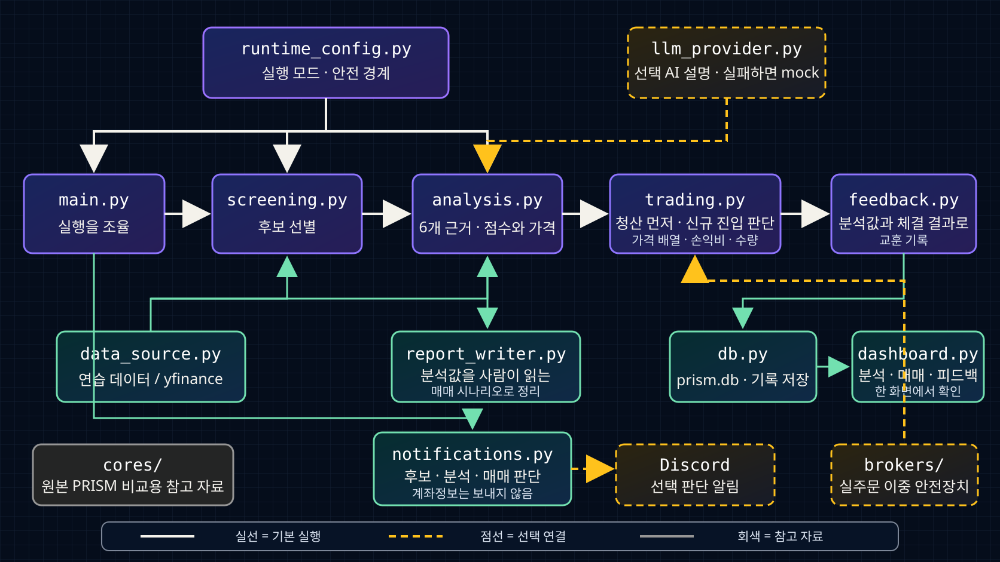
첫 실행에서는 구독 사용량을 아끼려고 보고서를 짧게 만듭니다. 보고서 내용보다 main.py에서 기록 저장까지 이어지는 파일과 순서를 봅니다.
원본 PRISM Insight 전체 지도
원본 PRISM은 시장 판단부터 거래 기록까지 한 흐름으로 운영됩니다
시장 → 종목 → 분석 → 매매 → 기록이 순서대로 이어집니다.
이 수업에서는 흐름을 네 모듈로 나눠 봅니다.
시작 질문은 ‘어떤 종목을 볼 것인가’입니다.
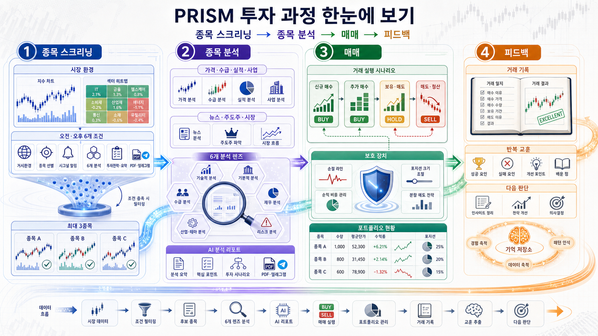
시장과 후보 선별부터 여섯 분석, 매매, 기록·기억까지 한 흐름으로 이어집니다. Discord·Telegram 알림과 실계좌 주문·보호 도구는 설정에 따라 켜거나 끕니다.
모듈 1 · 시작 질문
어제는 강세장, 오늘은 약세장입니다. 후보를 같은 기준으로 골라도 될까요?
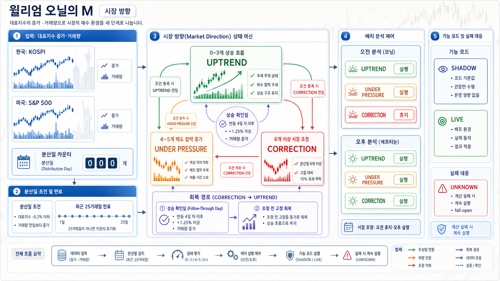
Market Pulse는 CAN SLIM의 M을 구현한 기준입니다. 대표지수의 종가와 거래량으로 세 상태를 계산합니다. 기본 shadow 모드에서는 결과만 기록하고 분석 배치는 계속 진행합니다.
모듈 1 · 시장 위험 누적
분산일은 하루의 숫자가 아니라 상태 변화입니다
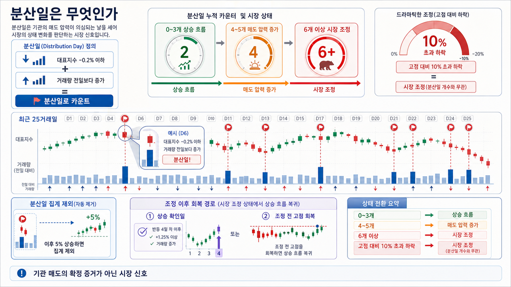
대표지수가 전일보다 0.2% 이상 내리고 거래량이 늘면 분산일로 셉니다. 최근 25거래일의 분산일을 0–3개, 4–5개, 6개 이상으로 나눠 상승 흐름·매도 압력 증가·시장 조정을 구분합니다.
모듈 1 · 시장 국면과 진입 정책
시장 판단 두 가지는 서로 다른 일을 합니다
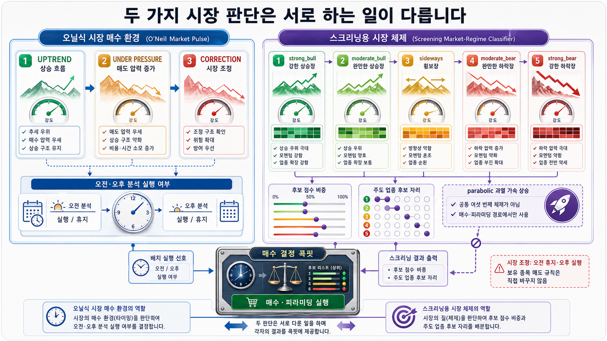
PRISM은 서로 목적이 다른 시장 분류를 두 가지로 운영합니다. 오닐식 3상태는 분석 배치 여부를 정하고, 스크리닝용 5상태는 후보 점수의 비중과 주도 업종 반영 방식을 정합니다.
모듈 1 · 여섯 선별 신호
오전과 오후는 서로 다른 움직임을 찾습니다
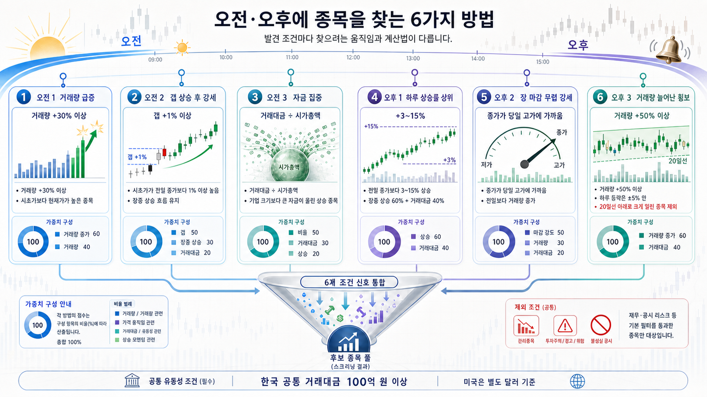
오전 세 조건과 오후 세 조건은 서로 다른 움직임을 찾습니다. 거래량 급증·갭·자금 집중·상승률·장마감 강세·횡보를 나눠 봅니다.
모듈 1 · 후보 재정렬
후보를 다시 점수 매겨 최대 세 종목만 넘깁니다
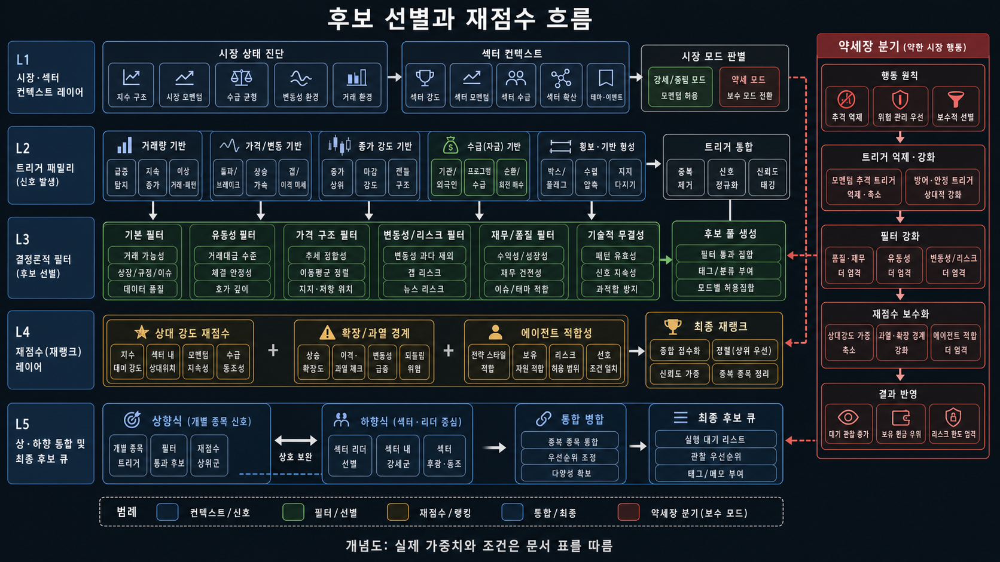
발견 조건·예상 손익비·후보군 상대강도·20일선 과열도를 네 점수로 계산하고, 네 점수를 시장 체제별 비중에 따라 합칩니다. 최종 후보는 보통 3종목이며 post-FTD 직후에는 1종목으로 줄일 수 있습니다.
두 구조 비교
강의용 코드는 핵심 필터를 한 파일에서 확인할 수 있습니다
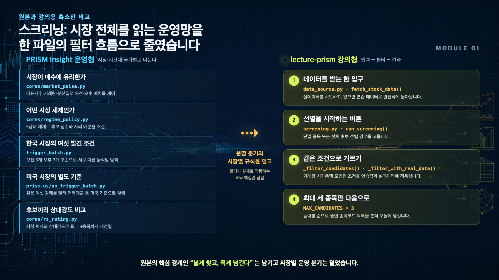
각 단계가 맡은 일을 읽은 뒤, 아래 파일과 함수가 lecture-prism에서 실제로 실행되는 위치인지 확인합니다.
모듈 1 · 직접 확인하기
프롬프트 파일에서 P3-M1 블록 전체를 복사합니다
슬라이드 문장을 다시 입력하지 말고, 수강생용 프롬프트 파일에 있는 완성된 블록을 사용합니다.
1.수강생 붙여넣기 프롬프트 · 파트 3 파일을 엽니다.
2.P3-M1의 ‘코딩 에이전트에 붙여넣기’ 코드 블록을 처음부터 끝까지 복사합니다.
3. 코딩 에이전트에 한 번 붙여넣고 실행이 끝날 때까지 기다립니다.
내 전략에 대입 1 내 전략이라면 후보를 가장 먼저 어떤 조건으로 거를까?
내 전략에 대입 2 후보가 너무 많다면 무엇을 우선해 순서를 정할까?
내 전략에 대입 3screening.py에서 바꿀 한 가지와 그대로 둘 안전장치는 무엇일까?
코드는 고치지 않고 연습 데이터로 한 번만 실행합니다. 조건을 바꾸는 실습은 파트 4에서 합니다.
수강생 자료 → P3-M1 · 해당 번호의 text 블록 전체를 붙여넣으세요
모듈 2 · 시작 질문
이 종목을 사기 전에, 어떤 정보까지 확인하고 싶으세요?
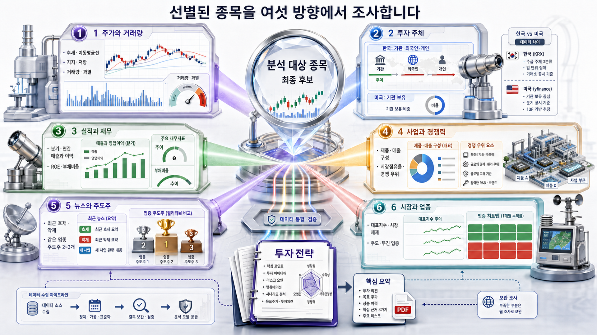
최종 후보마다 주가·거래량, 투자 주체, 실적·재무, 사업·경쟁력, 뉴스·주도주, 시장·업종을 따로 봅니다. 여섯 방향의 보고서를 투자 전략과 요약 보고서로 묶습니다.
모듈 2 · 에이전트 역할 지도
여섯 에이전트는 질문과 출력이 다릅니다
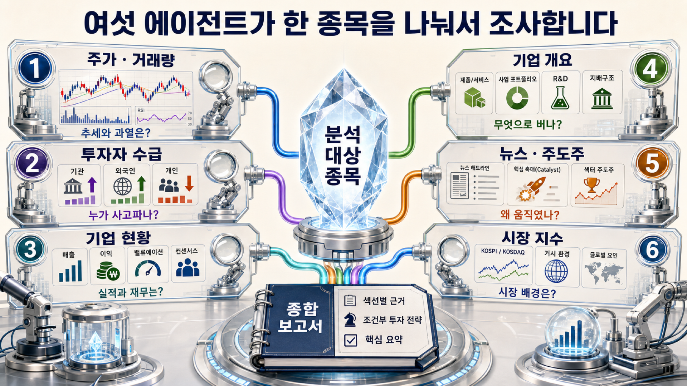
원본 코드의 에이전트 이름과 보고서 섹션을 한눈에 보도록 정리한 구조도입니다.
모듈 2 · 정량 에이전트 프롬프트
숫자를 읽는 프롬프트는 계산과 근거를 빠뜨리지 않게 합니다
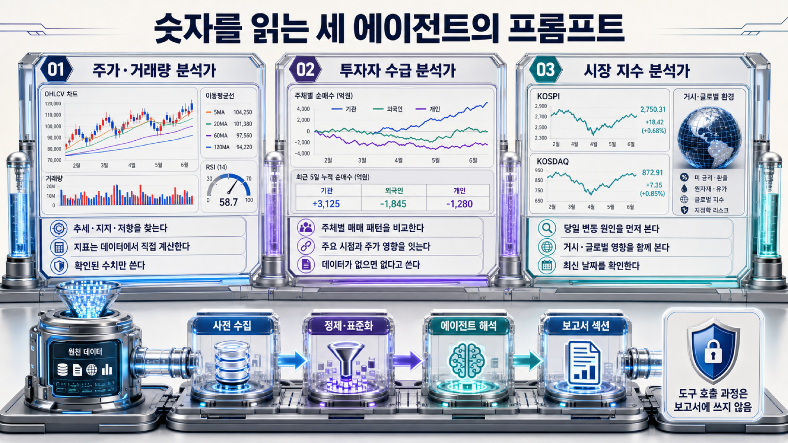
원본 프롬프트의 핵심 제약만 옮긴 그림입니다. 차트와 수치는 설명용입니다.
모듈 2 · 맥락 에이전트 프롬프트
맥락을 읽는 프롬프트는 출처와 범위를 제한합니다
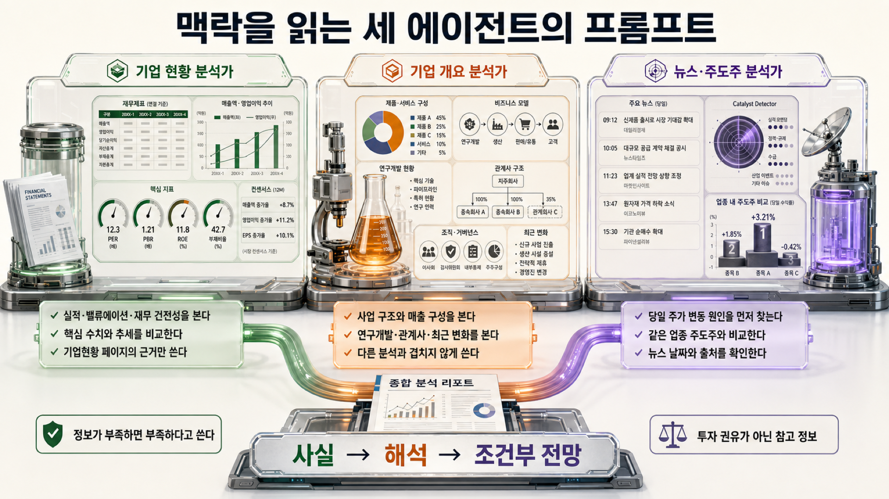
원본 프롬프트를 줄여 표현한 그림입니다. 화면의 회사·뉴스·재무 수치는 설명용입니다.
원본 PRISM · 보고서 조립
여섯 보고서를 모아 조건부 전략을 만듭니다
독립 조사
6개 섹션
주가·수급·기업·뉴스·시장 근거를 나눠 만듭니다.
기본은 순차
호출 제어
API 제한을 지키고, 한 섹션의 실패가 전체 보고서를 멈추지 않게 합니다.
근거 통합
투자 전략
기간별 관점·조건부 가격대·위험을 묶습니다.
읽기용 출력
요약·PDF
근거와 기준일을 한 보고서에 남깁니다.
보고서에 적힌 매수 고려 가격은 주문이 아닙니다. 실제 Enter / No Entry는 모듈 3에서 다시 결정합니다.
두 구조 비교
강의용도 여섯 전문 에이전트와 편집 에이전트를 조립합니다
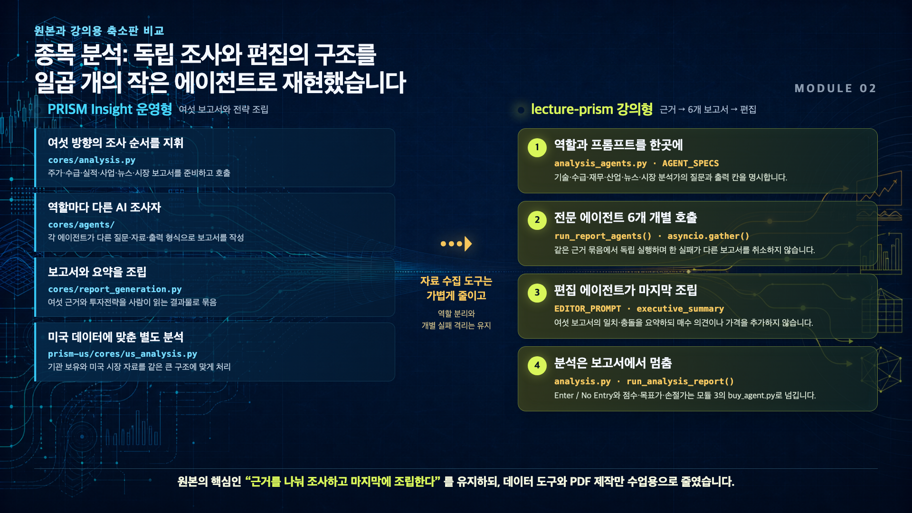
analysis_agents.py는 역할과 프롬프트를 나눠 둡니다. analysis.py는 전문 에이전트 6개와 편집 에이전트의 결과를 모아 보고서를 만듭니다.
모듈 2 · 구조 질문과 단독 실행
프롬프트 파일에서 P3-M2 블록 전체를 복사합니다
슬라이드 요약문을 다시 입력하지 않습니다. 수강생용 프롬프트 파일의 완성된 블록을 사용합니다.
1.수강생 붙여넣기 프롬프트 · 파트 3 파일을 엽니다.
2.P3-M2를 찾습니다.
3. ‘코딩 에이전트에 붙여넣기’ 블록 전체를 복사해 한 번 붙여넣습니다.
내 전략에 대입 1 내 전략에서 숫자로 확인할 근거와 맥락으로 읽을 근거는 각각 무엇일까?
내 전략에 대입 2 내가 아는 데이터 출처에서 어떤 값만 골라 어느 분석가에게 줄까?
내 전략에 대입 3 어떤 근거가 빠지면 매수 판단을 다음 단계로 넘기지 않을까?
005930 실데이터를 한 번 읽고, 연결되지 않으면 연습 데이터로 전환합니다. LLM 없이도 읽을 만한 보고서가 reports/에 남습니다.
수강생 자료 → P3-M2 · 해당 번호의 text 블록 전체를 붙여넣으세요
모듈 2 · 데이터 설계
데이터 보강은 빈칸 하나부터 시작합니다
보고서를 보다가 “실제 수급도 함께 보면 더 좋겠다”는 생각이 들면, 다음 주에는 필요한 숫자 한 묶음만 연결해 봅니다.
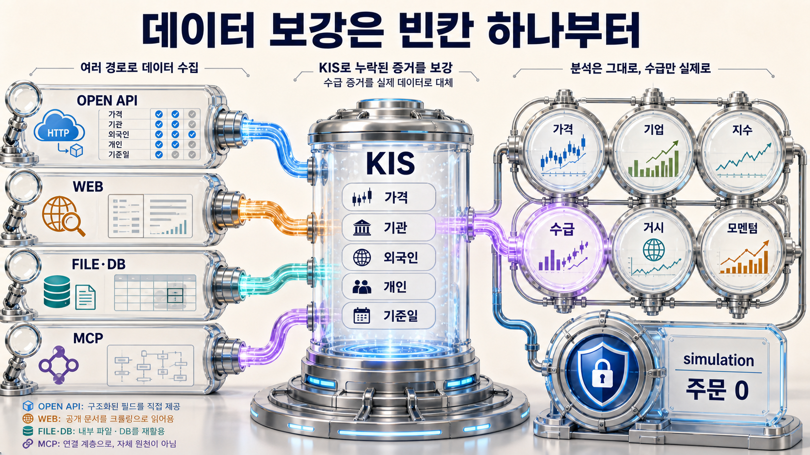
이번 주 마지막 장에서는 가능한 분만 KIS App Key와 App Secret을 준비해 옵니다. 다음 주 Part 4 초반에 기본 보고서의 수급 설명과 KIS 기관·외국인·개인 순매수를 나란히 확인합니다. 읽기 전용 simulation · 주문 0회이며, 주문은 하지 않습니다.
모듈 3 · 판단 사례
AI가 매수를 추천했습니다. 이 의견만 믿고 주문해도 될까요?
AI 의견
BUY 8점
분석 보고서를 읽고 매수 후보로 제안했습니다.
현재가
70,000원
주문 여부를 검토하는 현재 가격입니다.
목표가
77,000원
목표가까지 기대하는 폭은 10%입니다.
손절가
63,000원
손절가까지 감수하는 폭도 10%입니다.
계산 결과
손익비 1.0
기대 수익과 감수할 손실이 같습니다.
주문 전 조건
최소 1.5
손익비가 1.5보다 낮으면 BUY여도 주문하지 않습니다.
A
주문한다
AI의 매수 의견만 보고 주문한다.
B
보류한다
손익비를 확인한 뒤 주문을 보류한다.
수업을 위해 만든 가상 사례입니다. 주문과 보류 중 하나를 고르고 근거를 말해 보세요. 실제 실행 결과는 뒤에서 봅니다.
모듈 3 · 신규 진입
기업 성장과 수급을 함께 확인합니다
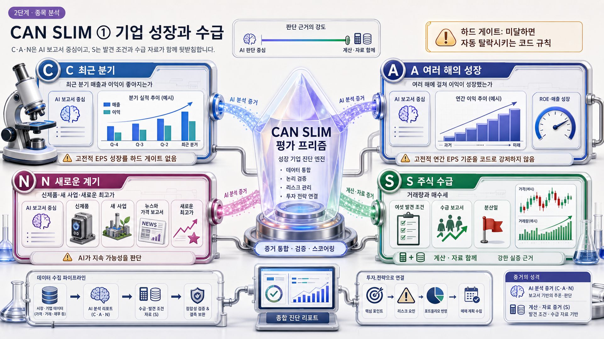
C·A·N·S는 최근 분기 실적, 여러 해의 성장, 새로운 성장 계기, 수급을 봅니다. 프롬프트에는 모두 들어 있지만 고전적인 EPS 증가율까지 코드의 필수 조건으로 구현한 것은 아닙니다.
모듈 3 · 신규 진입
뒤의 세 글자는 리더십과 시장을 확인합니다
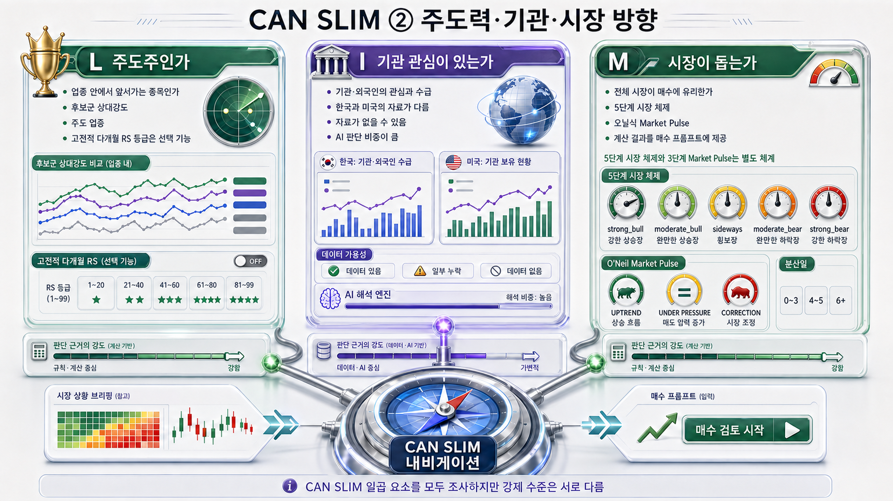
L·I·M은 주도주 여부, 기관의 관심, 시장 방향을 봅니다. 상대강도와 시장 상태는 코드로 계산하지만 기관 자료와 고전적 RS 등급은 기능 설정에 따라 범위가 달라집니다.
모듈 3 · 진입 게이트
에이전트가 Enter라고 해도 코드 게이트를 통과해야 합니다
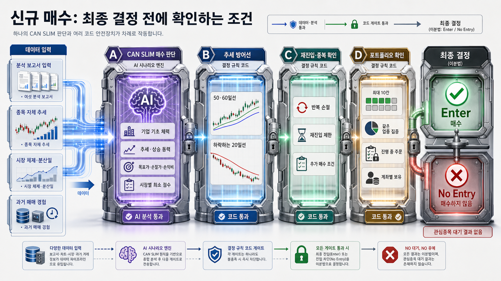
AI 시나리오의 최종 결과는 Enter 또는 No Entry입니다. 그 뒤 코드가 최소 점수, 하락 추세, 재진입, 중복 보유, 업종, 포트폴리오, 진행 중인 주문을 다시 봅니다. 재진입 대기 기간은 기본적으로 기록만 남기는 관찰 모드입니다.
모듈 3 · 피라미딩
수익 중인 강한 종목만 추가 진입을 검토합니다
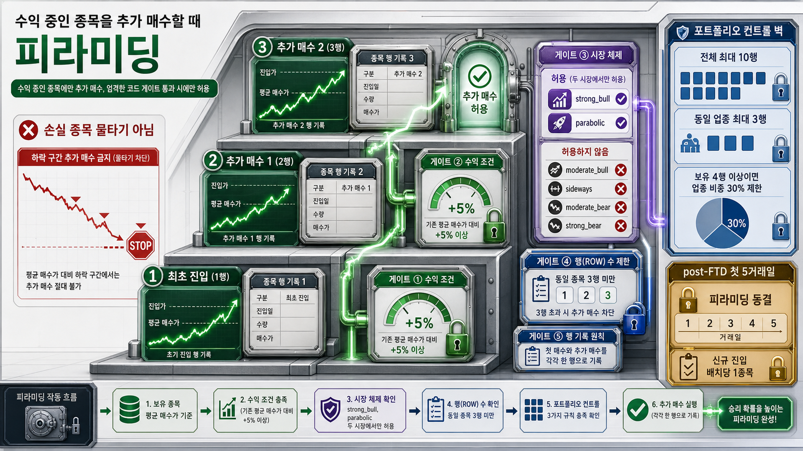
피라미딩은 손실 종목의 물타기가 아니라, 수익 중인 강한 종목에 비중을 더하는 방식입니다. 시장이 강하고 보유 종목의 수익률이 5% 이상일 때만 추가 진입을 검토합니다. 최초 진입 뒤 최대 두 번까지 가능하며 점수·업종·포트폴리오 한도도 봅니다.
모듈 3 · 청산
매도는 손실 제한부터 확인합니다
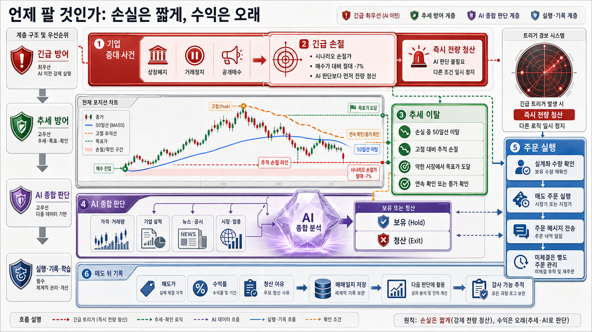
중대 사건과 즉시 손절 조건을 우선 봅니다. 그 밖의 경우에는 추세·실적·뉴스·시장 변화를 함께 살핍니다. 손절·추세 이탈·추적 손절은 목적이 다른 여러 도구가 나누어 처리합니다.
모듈 3 · 독립 보호 장치
보조 감시 작업은 메인 실행과 별도로 움직입니다
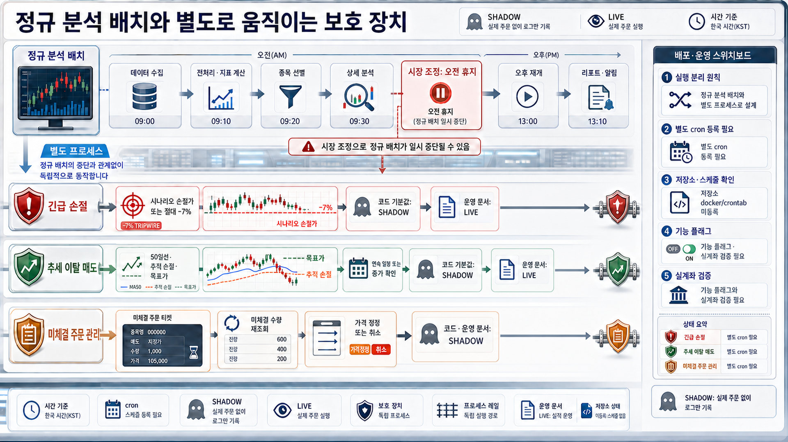
긴급 손절·추세 이탈·미체결 관리는 독립 실행할 수 있지만 저장소의 docker/crontab에는 등록되어 있지 않습니다. 실제 운영 여부는 서버 cron과 환경 변수를 함께 확인해야 합니다.
두 구조 비교
AI가 매수를 제안해도 코드가 주문 조건을 다시 확인합니다
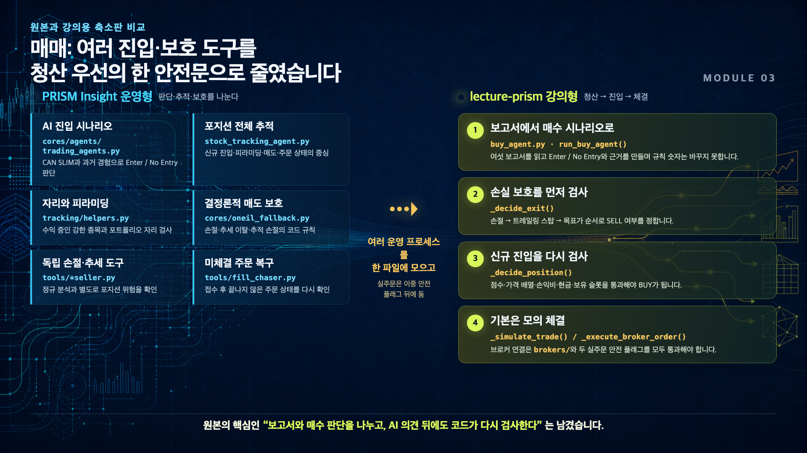
buy_agent.py가 보고서에서 Enter / No Entry 시나리오를 만들고, trading.py는 청산을 먼저 확인한 뒤 점수·가격·포트폴리오 조건을 다시 검사합니다.
모듈 3 · 주문 수명주기
브로커가 주문을 받았다고 매매가 끝난 것은 아닙니다
1
주문 의도
종목·방향·수량·가격을 고정합니다.
2
접수
브로커가 요청을 받았지만 체결 수량은 0일 수 있습니다.
3
부분체결
일부 수량만 체결된 상태이므로 아직 거래 교훈을 만들지 않습니다.
4
완료·재조회
미결 주문은 새 주문 없이 상태만 다시 확인합니다.
operations.py reconcile은 KIS·Toss 미결 주문을 조회만 합니다. Kiwoom 강의 어댑터에는 아직 같은 복구 루프가 없습니다.
모듈 3 · 구조 질문과 단독 실행
프롬프트 파일에서 P3-M3 블록 전체를 복사합니다
매수 시나리오와 가상 실행 결과를 봅니다. 수강생용 프롬프트 파일의 완성된 블록을 사용합니다.
1.수강생 붙여넣기 프롬프트 · 파트 3 파일을 엽니다.
2.P3-M3를 찾습니다.
3. ‘코딩 에이전트에 붙여넣기’ 코드 블록 전체를 복사해 한 번만 붙여넣습니다.
내 전략에 대입 1 AI가 좋다고 해도 코드가 반드시 막아야 할 진입은 무엇일까?
내 전략에 대입 2 내 전략에서는 손절·수익 보호·목표가를 어떤 순서로 확인할까?
내 전략에 대입 3 체결 상태가 불분명할 때 새 주문 전에 무엇을 확인할까?
실제 주문은 보내지 않습니다. 보고서 작성 → 매수 의견 → 안전 검사의 세 경계만 읽습니다.
수강생 자료 → P3-M3 · 해당 번호의 text 블록 전체를 붙여넣으세요
모듈 4 · 시작 질문
어제 손절한 종목이 오늘 다시 떴습니다. 다시 사도 될까요?
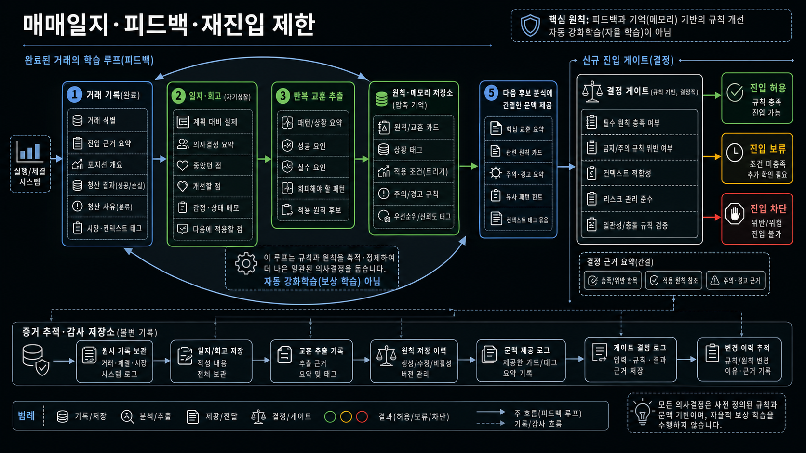
이 루프는 자율 강화학습이 아니라, 완료된 거래의 계획과 결과를 비교해 교훈을 남기는 구조입니다. 다음 판단은 이 기록을 참고하지만, 프롬프트나 주문 규칙은 사람이 검토한 뒤 다시 배포해야 합니다.
원본 PRISM · 피드백 루프
기억은 다음 판단에 쓰일 때 의미가 생깁니다
청산 완료
매매일지
진입 근거·매도 이유·수익률·당시 상황을 남깁니다.
회고
교훈 추출
잘한 점·놓친 신호·다음에 바꿀 행동을 적습니다.
선별
원칙·직관
반복 횟수와 신뢰도를 보고 약한 기억을 거릅니다.
재사용
다음 진입
같은 종목·섹터·트리거 이력과 장기 원칙을 다음 프롬프트에 넣습니다.
원본은 과거 기록을 참고했는지와 이후 성과를 따로 비교합니다. 기억도 검증 대상입니다.
모듈 4 · 운영 배치
실제 운영에서는 매주 기록을 압축합니다
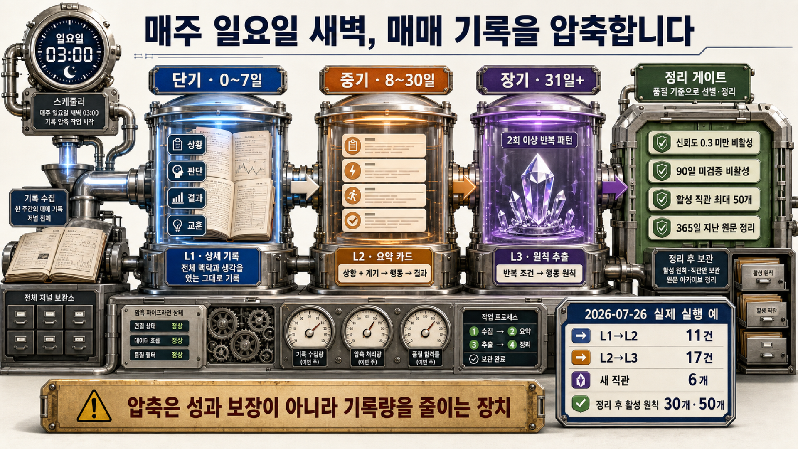
실제 서버의 일요일 03:00 배치와 2026-07-26 로그를 바탕으로 만든 그림입니다. 압축이 성과를 보장하지는 않습니다.
거래 기록 관리
기억은 많이 쌓는 것보다 다음 판단에 쓸 수 있게 관리하는 게 중요합니다
최근 교훈
상세하게 기록
같은 종목의 최근 판단과 결과를 다음 거래에서 우선 봅니다.
반복 교훈
짧은 원칙으로 정리
서로 다른 거래에서 같은 실수가 반복될 때만 장기 원칙으로 올립니다.
오래됐거나 도움이 안 되는 교훈
우선순위를 낮추거나 비활성화
오래된 기록은 중기 요약으로 옮깁니다. 근거가 약한 장기 원칙은 다음 판단에서 뺍니다.
메모리 압축의 목적은 삭제가 아닙니다. 다음 판단에 필요한 교훈을 앞에 두는 일입니다.
두 구조 비교
강의용 코드는 거래 기록과 기억 정리의 연결만 남겼습니다
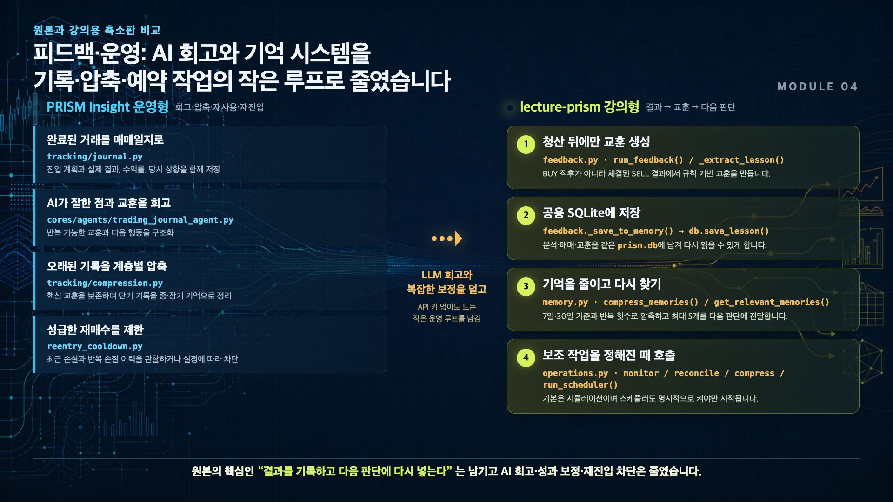
청산 결과는 교훈으로 저장됩니다. 이 기록이 기억 압축과 보조 작업을 거쳐 다음 판단에 쓰이는 위치를 봅니다.
모듈 4 · 구조 질문과 보조 작업 실행
프롬프트 파일에서 P3-M4 블록 전체를 복사합니다
거래가 끝난 뒤 남는 기록과 보조 작업을 봅니다. 수강생용 프롬프트 파일의 완성된 블록을 사용합니다.
1.수강생 붙여넣기 프롬프트 · 파트 3 파일을 엽니다.
2.P3-M4를 찾습니다.
3. ‘코딩 에이전트에 붙여넣기’ 코드 블록 전체를 복사해 한 번만 붙여넣습니다.
내 전략에 대입 1 거래가 끝나면 처음 계획과 실제 결과 중 무엇을 비교해 남길까?
내 전략에 대입 2 같은 실수가 몇 번 반복되면 장기 원칙으로 만들까?
내 전략에 대입 3 오늘의 교훈 중 다음 거래에는 넣지 말아야 할 일회성 상황은 무엇일까?
예약 시각과 실제 주문 설정은 바꾸지 않습니다. schedule은 구조만 읽고 수업 중에는 켜지 않습니다.
수강생 자료 → P3-M4 · 해당 번호의 text 블록 전체를 붙여넣으세요
모듈 4에서 운영으로
여기까지는 한 번 실행했습니다. 매일 안전하게 반복하려면 무엇이 더 필요할까요?
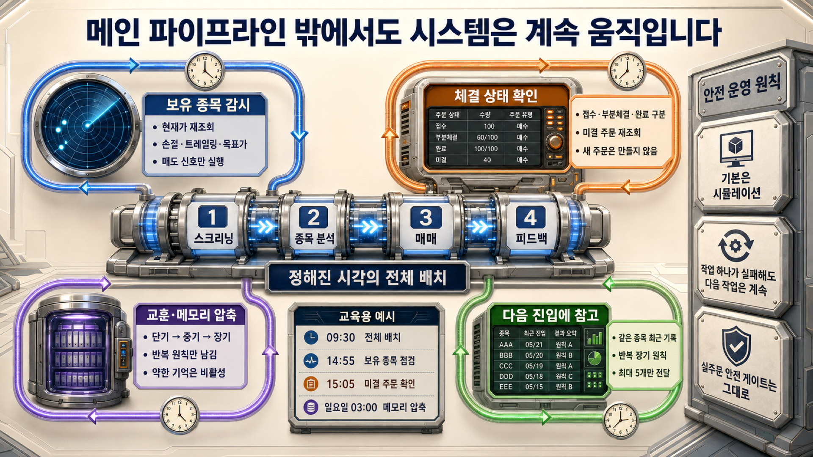
① 한 번 판단
② 매일 확인
③ 기록 정리
가운데 네 모듈은 한 번의 판단을 끝냅니다. 매일 운영하려면 다음 실행 시작, 보유 종목과 주문 결과 확인, 기록 정리를 따로 맡겨야 합니다.
모듈 5 · 컴퓨터가 대신 챙길 일
매일 돌리려면 다섯 가지를 따로 챙겨야 합니다
1
정해진 때 시작하기
후보 찾기와 분석을 약속한 시각에 새로 실행합니다.
2
보유 종목 살피기
이미 산 종목이 손절 기준이나 추세를 벗어났는지 확인합니다.
3
주문 결과 확인하기
접수, 부분체결, 체결 완료 가운데 어느 상태인지 다시 확인합니다.
4
기록 정리하기
오래된 교훈을 줄이고 다음 판단에 필요한 기록만 남깁니다.
5
이상 알려주기
작업이 끝난 지점과 멈춘 이유를 사람이 확인할 수 있게 남깁니다.
수업에서 할 일
내 컴퓨터의 준비 상태 읽기
코딩 에이전트에게 준비된 것과 빠진 것만 확인해 달라고 부탁합니다.
수업에서 하지 않을 일
자동 실행과 실계좌 연결
자동 실행 등록, 브로커 설정 변경, 실제 주문·취소는 하지 않습니다.
다음 화면에서 P3-M5를 붙여넣으면 코딩 에이전트가 읽기 전용으로 점검합니다.
모듈 5 · 코딩 에이전트와 함께 점검하기
내 컴퓨터에서는 이 순서로 준비 상태를 확인합니다
터미널 명령어는 직접 입력하지 않습니다. P3-M5 블록 전체를 붙여넣으면 코딩 에이전트가 아래 순서로 점검합니다.
1 · 준비 상태 점검
operations.py doctor
필요한 파일과 설정이 있는지만 읽습니다. 비밀값은 보여 주지 않습니다.
2 · 현재 상태 읽기
operations.py status
실행 중인 작업과 마지막 기록을 읽습니다. 설정은 바꾸지 않습니다.
3 · 결과 이해하기
준비됨 / 준비 안 됨
값 자체가 아니라 준비 여부와 다음에 채울 것만 확인합니다.
4 · 다음 단계 고르기
다음 운영 단계
연습 데이터(mock) → 실데이터(real_data·research) → 모의투자(paper) → 실거래(live) 순서로 준비합니다.
내 전략에 대입 1 내 컴퓨터는 지금 어느 단계까지 안전하게 준비됐을까?
내 전략에 대입 2 컴퓨터가 자동으로 챙겨야 할 일은 무엇일까?
내 전략에 대입 3 준비가 덜 된 증권사는 무엇부터 더 확인해야 할까?
준비 상태만 확인합니다. 실제 주문·취소 없이 진행하고, 자동 실행 등록이나 실거래 잠금장치는 바꾸지 않습니다.
수강생 자료 → P3-M5 · 해당 번호의 text 블록 전체를 붙여넣으세요
모듈 5 · 로컬 확인 화면
대시보드에서는 실행 결과 세 곳만 확인합니다
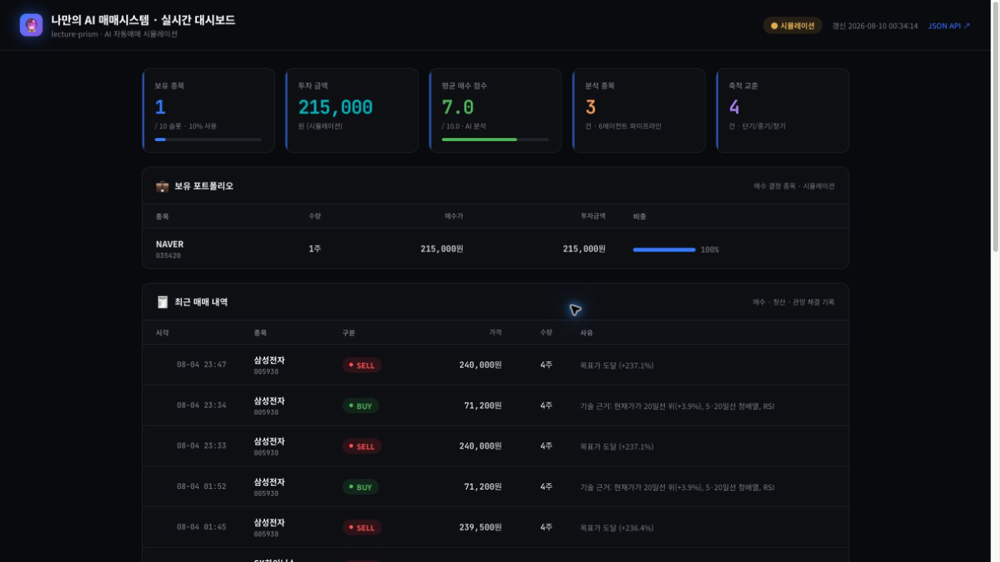
1
1 · 매매현황
2 · AI 분석 근거
3 · 축적된 피드백
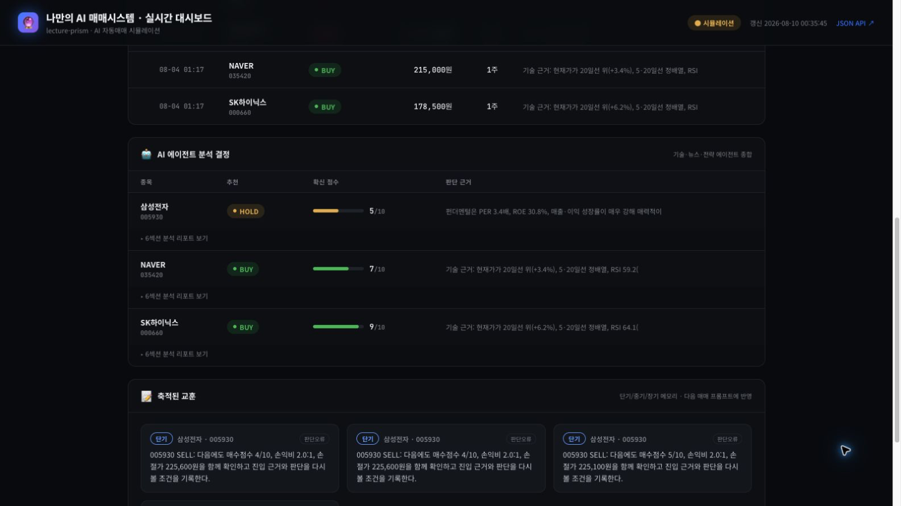
23
대시보드는 새로운 판단을 내리는 화면이 아닙니다. 로컬 실행이 끝난 뒤 판단 근거와 저장된 기록을 다시 확인하는 화면입니다.
로컬 시뮬레이션 기록 · 실계좌 화면 아님
수강생 자료 → P3-05 · 해당 번호의 text 블록 전체를 붙여넣으세요
파트 3 마무리 · 시스템 철학
자동매매는 수익보다 먼저 망하지 않는 시스템이어야 합니다
처음부터 돈을 잘 벌지 못해도 괜찮습니다. 계좌와 판단 근거가 남아 있으면 다음 실행에서 고칠 수 있습니다.
01 · 안전
파멸 가능성을 먼저 없앱니다
한 번의 오류나 판단으로 계좌를 무너뜨릴 수 있는 구조는 전략보다 먼저 막아야 합니다.
02 · 기록
판단 전후를 빠짐없이 기록합니다
후보, 진입 이유, 시장 상태, 청산 기준, 매도 후 흐름까지 남깁니다.
03 · 개선
기록으로 다음 결정을 고칩니다
쌓인 로그를 다시 읽고 AI와 함께 검증하면 개선할 근거가 생깁니다.
망하지 않으면, 더 나아질 기회가 남습니다. 기록을 쌓고 다시 검증하는 과정에서 시스템을 고쳐 갑니다.
PRISM Insight · 관측 데이터 카탈로그
후보부터 실제 성과까지 남기면 하나의 판단을 다시 볼 수 있습니다
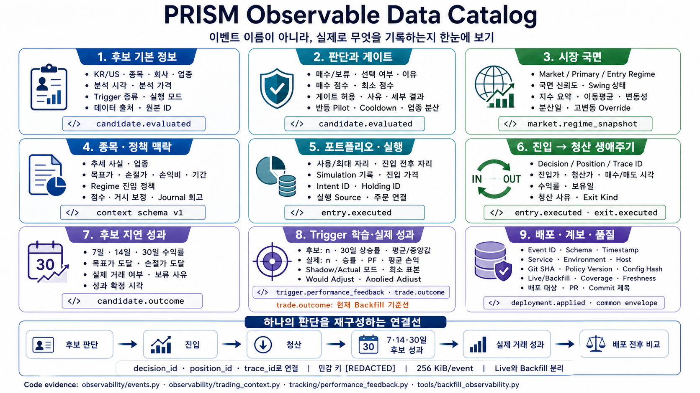
각 판단에 후보·시장·포지션·체결·지연 성과·배포 품질을 함께 남기고 decision_id, position_id, trace_id로 연결합니다. 민감 키는 기록하지 않습니다.
PRISM Insight · 로깅 인텔리전스 아키텍처
시간이 지난 기록을 검증해 다음 정책을 고칩니다
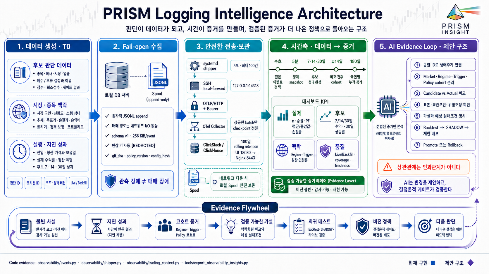
수집 경로가 막혀도 기록은 로컬 스풀에 남습니다. 시간이 지난 성과·품질 지표를 비교해 다음 정책을 고칠 검증 가능한 증거를 만듭니다. AI는 증거를 읽되 배포는 결정론적 게이트로 제한합니다.
파트 4 준비
파트 4에서 고치고 싶은 것을 한 문장으로 정해 옵니다
30초 버전이면 충분합니다. MY_STRATEGY.md에 진입·청산·위험 관리 중 하나만 적어도 됩니다. 가능한 분은 한국투자증권(KIS) 모의투자 또는 실전투자용 App Key와 App Secret을 준비해 오세요.
내 전략에서 ___을 ___하게 바꾸고 싶다.
MY_STRATEGY.md에 저장해 다음 수업에 가져오세요. KIS 키는 채팅에 붙이지 말고 로컬 .env에 직접 입력합니다. 계좌번호·HTS ID는 필요하지 않습니다.